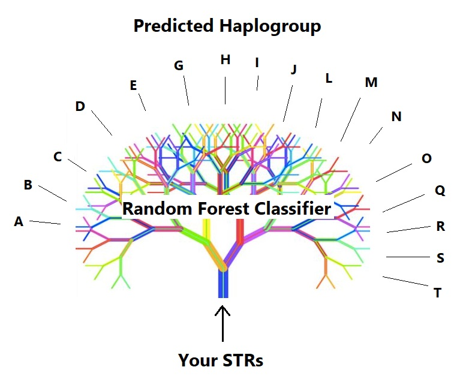

YSEQ Haplogroup Predictor (beta version)

Developed by Hunter Provyn with input and support from YSEQ / Thomas Krahn.
The haplogroup prediction is backed by a Random Forest model implemented in python using sklearn.
This YSEQ haplogroup predictor is open source software and can be cloned from GitHub: https://github.com/hprovyn/str-to-haplogroup-predictor
Please always give a link to this original website as a reference.
The haplogroup prediction is backed by a Random Forest model implemented in python using sklearn.
This YSEQ haplogroup predictor is open source software and can be cloned from GitHub: https://github.com/hprovyn/str-to-haplogroup-predictor
Please always give a link to this original website as a reference.
Enter STR to get Prediction
Enter STRs in one of two formats, then press ENTER:
This YSEQ haplogroup predictor has been trained by the following model: